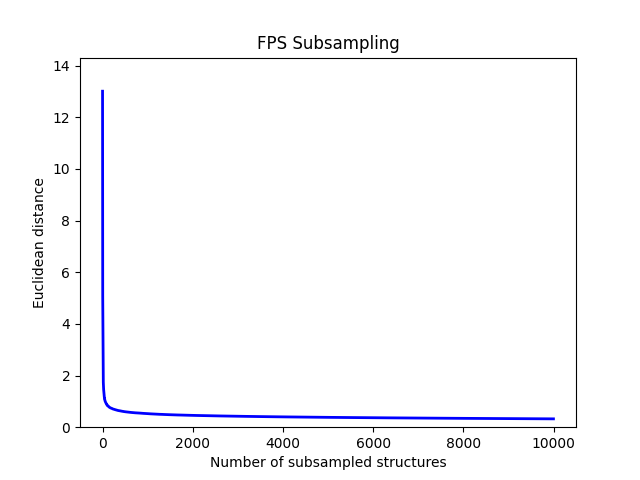

Subsampling#
Modern atomistic modelling produces large volumes of structural data with substantial redundancy. Neural network potentials require efficient training datasets. CRISP applies SOAP-descriptor based subsampling to select diverse subsets that preserve essential chemical variability, enabling efficient neural network training without compromising performance.
FPS and SOAP#
We demonstrate subsampling benefits using the rMD17 dataset [1] - gas-phase molecular dynamics trajectories of small organic molecules with energies and forces computed at the PBE level, providing ~100,000 configurations per system.
from CRISP.simulation_utility.subsampling import subsample
# Subsample rMD17 dataset for neural network training
subsample(filename="rMD17_combined.xyz",
n_samples=10000,
index_type="all",
file_format="extxyz",
skip=1,
plot_subsample=True)
All molecular trajectories were combined into a single pool. SOAP descriptors [2] were computed for each structure and furthest point sampling (FPS) applied to prioritise structural diversity, ranking configurations by dissimilarity in descriptor space.
From this ranked list, we extracted 10,000 diverse configurations as a reduced training set. MACE models were trained on both FPS-selected data and standard 10,000 structure subsets using consistent hyperparameters: 128 channels, 6 Å radial cutoff, invariant messages only, early stopping with 30 epoch patience.
Training Results:
Standard rMD17 subset: 144 epochs to converge
FPS-reduced set: 66 epochs to converge
This reduction highlights the effectiveness of descriptor-guided subsampling in accelerating model development.
Due to redundancy in the rMD17 database, 10,000 structures may be excessive. CRISP generates convergence visualization showing earlier convergence.
# Test with smaller subset
subsample(filename="rMD17_combined.xyz",
n_samples=1000,
index_type="all",
file_format="extxyz",
plot_subsample=True)
MACE trained on only 1,000 structures converged in 137 epochs while maintaining accuracy of the 10,000-structure model.
Visualization:
{kind=link}
This subsampling technique also serves as a pre-screening tool for molecular dynamics or Monte Carlo simulations by selecting diverse structures from trajectories or datasets.